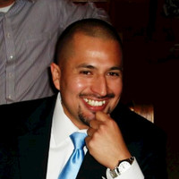

About | Christopher Teodoro
Christopher is an aspiring web developer living in San Antonio, TX. He currently works at USAA Federal Savings Bank and has over 10 years of banking experience. Christopher has always thought of himself as an ambassador of the creative arts and is currently learning web development to expand and enhance his itch to help build a better future by using his own hands. Knowing full-stack web development will allow him to build out his ideas and hopefully land him a better job in this growing field.
Christopher has many skills that he has picked up through the years and some of the positions he has held are:
- Consumer Lending Account Services Specialist for USAA Bank
- Finacial Foundations Associate for USAA Bank
- Vault Teller for Pendum an Armored Car Company
- Concierge
- Veterans Benefits Associate for San Antonio College
- Waiter
- Airborne Infantryman with the U.S. Army